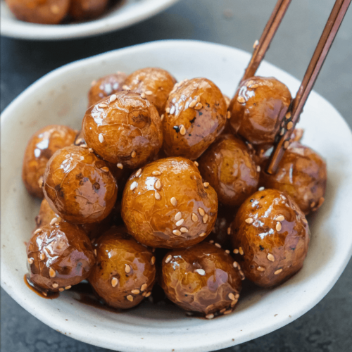

Korean Potatoes

Known as Ganja Jorim, these are potatoes cooked down and coated in a sweet
and savoury glaze that pairs really well with steamed
rice. It’s also delicious enjoyed as is.
The term jorim means simmering something in a sauce until
the sauce has been absorbed/reduced. Similar to dubu jorim
(Korean braised tofu), these potatoes are cooked down in a
braising sauce.
The potatoes have that nice chewy bite from the skin
but its insides are very soft. I really love dipping these
in whatever of the sauce/glaze is left to get more of it
on the potatoes.
Ingredients
- 1 1/2 tbsp cooking oil
- 1 lb baby potatoes
- 1 cup water
- Honey
- 5 tbsp soy sauce
- 4 tbsp maple syrup
- Sesame seeds for garnish
Steps
- Make sure to thoroughly wash your potatoes and brush off any dirt. If your potatoes are larger than a ping pong ball, I recommend slicing these in half.
- Mix all the ingredients for the sauce and then set aside. I like mine more on the savoury side with a generous amount of soy sauce. You can easily adjust this to your taste.
- Place the potatoes on a baking tray and leave to bake for 30-35 minutes at 350F/180C or until the skin of the potatoes are slightly wrinkly and potatoes are almost cooked through.
- After baking/cooking the potatoes, heat a large pan with a lid over medium high heat. Once hot, add the neutral oil.
- Place the potatoes and cook for 3-4 minutes until lightly browned on each side.
- Lower the heat to medium and then pour in the braising sauce.
- Mix the potatoes and then cover the pan.
- Leave to simmer over medium heat for 8-10 minutes or until the potatoes are cooked through. The sauce will also slowly thicken from the sugars.
- Once the sauce has thickened, add in the rice syrup or other liquid sweetener, sesame oil, and sesame seeds.
- Turn up the heat to medium high until the sauce and sugars start to bubble and then mix the potatoes to coat in the glaze.
- Keep a close eye on the potatoes since they can easily burn from the sugars. Taste the potatoes and feel free to add more liquid sweetener if you’d like.
- Serve and enjoy warm or cold. Note that the potatoes will stick and clump together due to the glaze as it cools.
- You can refrigerate these potatoes but they’re best enjoyed freshly made.